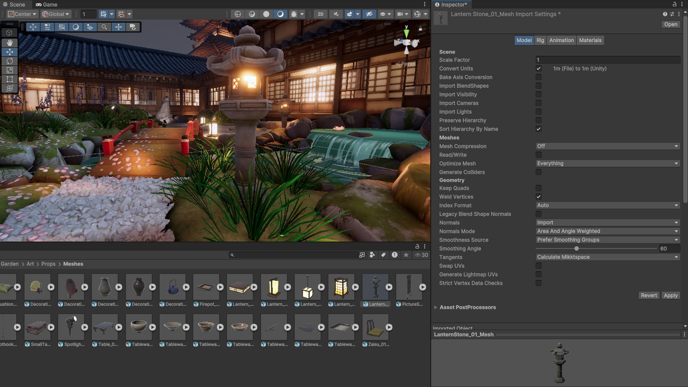

Jogo magic, formato pc e vibecodo
Infraestrutura, automação e desenvolvimento web.
Ver ProjetosSobre Mim
Olá! Meu nome é Igor Borges Teixeira, sou estudante de TI residente em Ribeirão Preto. Tenho um forte interesse na intersecção entre infraestrutura e desenvolvimento, trabalhando desde a administração de servidores até a criação de scripts de automação.
Meu foco atual envolve redes (Cisco Packet Tracer), administração de sistemas Linux e Windows Server (Active Directory), além de desenvolvimento web com HTML, CSS e JavaScript. Estou sempre passeando com meus cachorros, editando vídeos ou explorando o mundo do retrogaming e emulação.
Habilidades
Projetos
Extrator de Vídeos em Python
Interface gráfica em Tkinter que utiliza yt-dlp e FFmpeg para automatizar o download e corte de clipes para edição de vídeo.
Ver detalhes →
Console Retrô com LakkaOS
Conversão de uma TV Box (Rockchip RK3228A) em uma central dedicada de emulação retrô, configurada via SSH.
Ver detalhes →
Jogo PvP em Unity
Protótipo de um jogo multiplayer misturando mecânicas de cartas e bolinhas de gude desenvolvido na Unity Engine.
Ver detalhes →